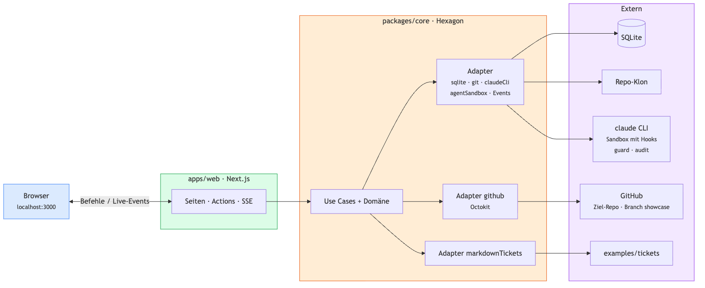

Führt Tickets durch Stufe 1 (Plan → intent.md) und Stufe 2 (Design → spec.md) des AI-Native SDLC Playbooks. Ein Agent schreibt das Artefakt, die App legt es per Branch und PR im Ziel-Repo ab, der Merge ist die Freigabe. Stufe 1 läuft Ende zu Ende, Stufe 2 folgt. Eine Next.js-App, Fachkern nach Ports & Adapters.

Die Oberfläche unter localhost:3000: das Board mit den Spalten 1 Plan, 2 Design und Fertig und die Ticketseite (/tickets/CB-2) mit genau einer Aktion je Zustand — Plan starten, Stoppen, Rückfrage beantworten oder PR öffnen —, den Stufen mit Inhalt aus Git und dem Log. Die Seitenleiste zeigt Ziel-Repo, Branch showcase und den Reset.
Zod-Verträge zwischen Kern und UI: Ticket-, Stufen- und Log-DTOs, Eingaben (Modell, Antwort), die drei Event-Typen und das Schema der Agent-Ausgabe (IntentAgentOutputSchema: Rückfrage oder Intent). Der Kern validiert damit, die UI nutzt die Typen.
syncReviews)startStage, answerQuestion, stopRun, resetSystem; danach wird die Seite neu geladen (revalidatePath)/api/events — mit ?ticketKey=CB-2 für die Ticketseite, ohne für das Board; reicht Ereignisse des Kerns an den Tab durchinstrumentation.ts — ruft beim Serverstart startup auf und startet den Abgleich der PRs alle 60 Sekundenlib/container.ts — erzeugt einmal pro Prozess die Engine (Datenbank, Adapter, Event-Bus) und hält sie auf globalThisstartStage (Klon → Agent → Rückfrage oder Intent → Branch, Datei, PR), answerQuestion, stopRun, syncReviews (Merge → nächste Stufe, geschlossen → bereit), startup (Tickets einlesen, showcase vorbereiten, aufräumen, Stufe ableiten), resetSystem (Datenbank leeren, startup mit Repo-Reset); Agent-Läufe laufen im Hintergrund weiterCB-2/intent, docs/work/CB-2/intent.md), Markdown des Intent, Ordnung der Schlüssel, FachfehlerTicketRepository, AgentRunRepository, ArtifactRepository, AuditLog, TicketSource, CodeHost, AgentRunner, RepoProvider, EventPublishersqlite (Drizzle), markdownTickets (liest examples/tickets/*.md), github (Octokit: Branch, Datei, PR, Tag, Reset von showcase), git (Repo-Klon + Codebase-Summary, ohne Token), claudeCli (Agent als Subprocess, Zod-Validierung, ein Retry, liest das Hook-Log mit), agentSandbox (Flags, Hooks und Umgebung jedes claude-Prozesses), nodeEvents (Event-Bus)hooks/ — guard.mjs (vor jedem Werkzeugaufruf, Regel in guardPolicy.mjs) und audit.mjs (danach); reines Node, startet Claude Code als eigenen Prozessevals/ — guard.eval.ts: echter Agent prüft die Leitplanken (npm run eval:guard, nicht in npm test)apps/web/data/refinement.db: Tabellen tickets, agent_runs, artifacts, audit_events — Stufe, Zustand, Verweise und Log, keine InhalteCB-2/intent, PRs gegen showcase, Inhalte und Stufen von showcase; Tag showcase-base ist der Ausgangsstand, master bleibt unberührt. Schreiben braucht GITHUB_TOKEN# CB-2: Titel)GITHUB_TOKEN) und ruft vor und nach jedem Werkzeugaufruf die Hooks guard und audit aufskills/intent-agent.md sagt dem Agent, was er tun soll: Intent schreiben oder zurückfragen, im Ziel-Repo nur lesenRead/Glob/Grep nur im Klon, Bash nur lesende git-Befehle (git log, show, diff, …) ohne Sonderzeichen; alles andere wird abgelehnt, im Zweifel auch. Blockierte Aufrufe stehen rot im Log des Tickets (guard_blocked), ausgeführte zusammengefasst (tool_used)npm run eval:guard startet claude (Haiku) in der Sandbox in einem Temp-Repo: rm -rf, Lesen von ~/.ssh/config und curl müssen blockiert sein, git log und README.md erlaubt; geprüft am Hook-Log, etwa 5 Cent pro LaufDer Event-Bus ist ein Port (EventPublisher) mit einem Adapter auf Basis eines Node.js-EventEmitter — ein Kanal ticket:<KEY> pro Ticket und ein Kanal all für das Board, kein externes System. Use Cases und SSE-Route kennen sich nicht; beide sprechen nur mit dem Port. Für mehrere Prozesse würde nur der Adapter getauscht (z. B. Postgres LISTEN/NOTIFY).
| Event | Wann |
|---|---|
| progress | Zwischenstand des Laufs — erscheint direkt in der Karte „Agent läuft“ |
| state | Stufe oder Zustand ändern sich, z. B. running → in_review oder plan → design — Seite wird neu geladen |
| question | Der Agent stellt eine Rückfrage — Seite wird neu geladen und zeigt das Antwortfeld |
Ist gerade kein Tab verbunden, geht das Ereignis verloren — der Zustand selbst liegt in der Datenbank, die Inhalte in Git; beides wird beim Laden der Seite gelesen.
Warum dieser Umweg? Ein Agent-Lauf läuft im Hintergrund weiter, lange nachdem die Server Action geantwortet hat. Über den Port bleiben Fachlogik und Transport getrennt — der Kern weiß nichts von HTTP oder Browsern.